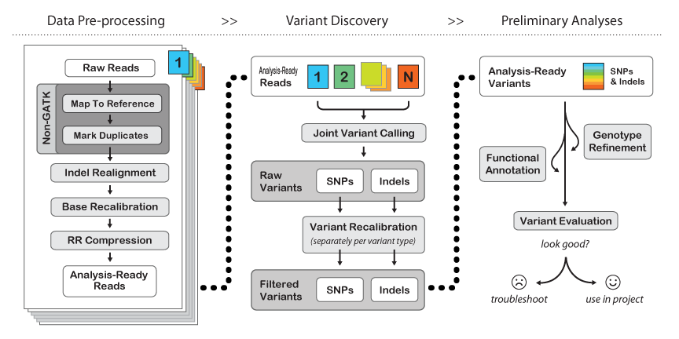
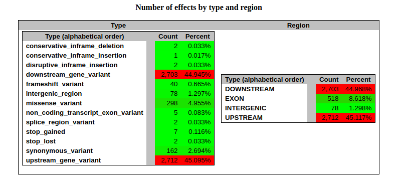
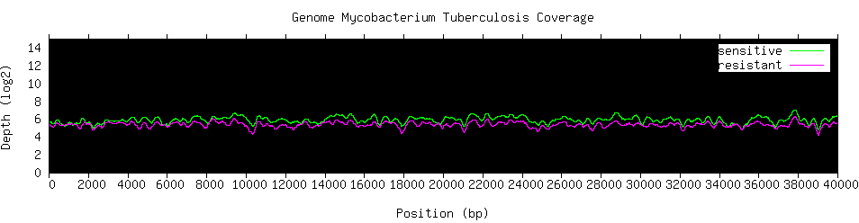

Whole-Genome Sequencing (WGS) with Short Reads
Whole-Genome Sequencing (WGS) using short-read technology (e.g. Illumina) provides
a comprehensive, high-resolution view of the entire DNA content of an organism...
When a reference genome is available, this process is known as
resecuenciación: newly sequenced reads are aligned against the reference to detect genomic differences.
This allows precise identification of:
- SNPs
- INDELs <50bp
- Small structural changes
Step 1: Data Quality Control
Raw FASTQ files are evaluated with FastQC and summarized using MultiQC...
View FastQC Report
View MultiQC Report
Step 2: Trimming
Trimming is an essential step...
Step 3: Alignment with BWA-MEM
High-quality reads are aligned...
View MultiQC Report
Step 4: Variant Analysis Pipeline
Once reads are aligned...

Step 4.1: Data Preprocessing with Picard
Before performing variant calling...
Step 4.2: Variant Calling with GATK
Variant discovery is performed using GATK...
Step 4.3: Variant Filtering
The raw variant file may still contain sequencing artifacts...
Step 5: Variant Annotation with SnpEff
Once high-confidence variants are obtained...


View SnpEff Report
Step 6: Coverage Analysis & IGV Visualization
Sequencing coverage provides insight...
